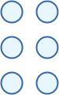
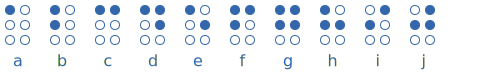
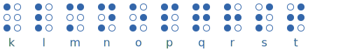
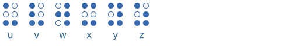
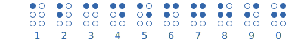
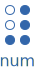
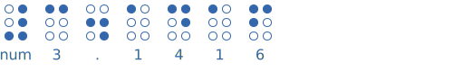
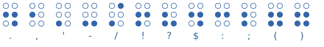
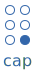
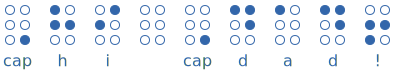

Braille

Braille is one of the most important codes in the world. It is used by blind people to read and write.
There are six dot positions, and the dots are raised up (so you can feel them) in special patterns.
Each pattern of dots is a "character" (a letter or number, etc)
The Braille Alphabet
These are the dot patterns for the 26 letters of the alphabet:



Also, if you took out w, then u to z is like a to e but with two extra dots ... the original code didn't include w!
Numbers

The patterns for the numbers are exactly the same as for the letters a to j.
So there is this special character to put in front of numbers:

Example: 3.1416

Without the "num" character it looks like "c.adaf"
Punctuation

Capital Letters
Capital Letters are shown by putting this special character in front of them:

Example: Hi Dad!

Practice
Our examples have all shown the braille character with its matching letter or number, but that is not normally done.
Can you tell what this says?

And how about this one?